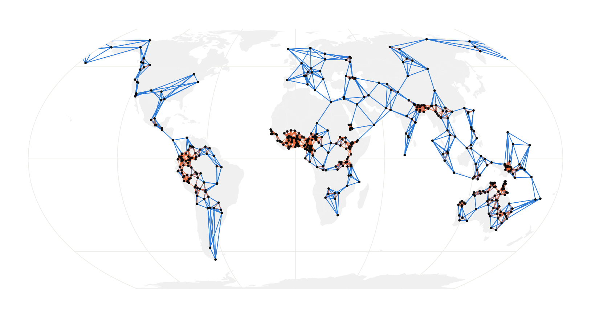
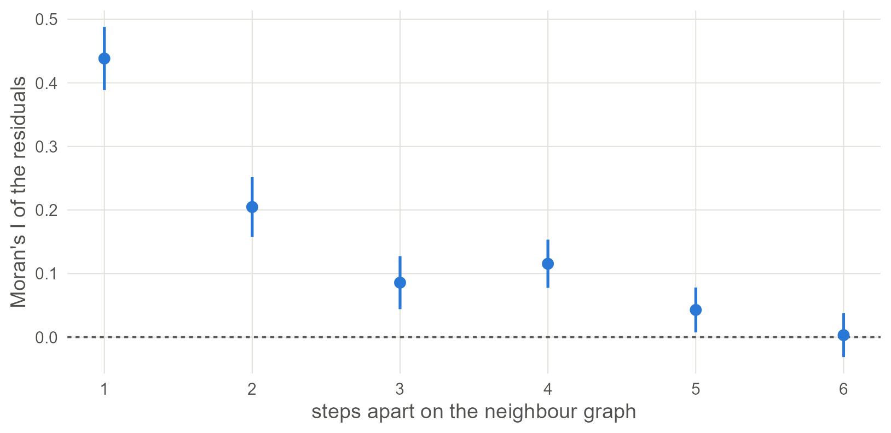

5 Maps: coordinates, distances and neighbours
Spatial models need one of two things from your coordinates: distances between languages, or a list of who neighbours whom. Build both, and learn what each choice assumes.
5.2 Languages as points
The data give each language one longitude and one latitude. st_as_sf() turns those two columns into a spatial object, and crs = 4326 says they are ordinary degrees on the globe.
pts <- st_as_sf(d, coords = c("lon", "lat"), crs = 4326, remove = FALSE)
pts[1:3, c("name", "family", "geometry")]## Simple feature collection with 3 features and 2 fields
## Geometry type: POINT
## Dimension: XY
## Bounding box: xmin: 36.7 ymin: 7.39 xmax: 39.3 ymax: 44
## Geodetic CRS: WGS 84
## name family geometry
## 1 West Circassian Abkhaz-Adyge POINT (39.3 44)
## 2 Beja Afro-Asiatic POINT (36.7 17.2)
## 3 Alaba-K'abeena Afro-Asiatic POINT (38.2 7.39)A point is a simplification. A language is spoken over an area, sometimes a discontinuous one, and Glottolog’s point is roughly its centre. For a world sample that is good enough. For a study of one region, speaker-area polygons are better if you can get them, and the last section of this chapter shows where they plug in.
5.3 Distances
Distance on a globe is measured along great circles. st_distance() does it for sf points and sp::spDists() returns a plain matrix in kilometres, which is the more convenient form.
coords <- as.matrix(d[, c("lon", "lat")])
km <- sp::spDists(coords, longlat = TRUE)
dimnames(km) <- list(d$name, d$name)
show <- c("Tigrinya", "Harari", "Zulu", "Central Aymara")
round(km[show, show])## Tigrinya Harari Zulu Central Aymara
## Tigrinya 0 753 4984 12318
## Harari 753 0 4417 12500
## Zulu 4984 4417 0 9929
## Central Aymara 12318 12500 9929 0Next, find how far each language is from its nearest neighbour in the sample.
nearest <- apply(km + diag(Inf, nrow(km)), 1, min)
round(quantile(nearest, c(0, 0.25, 0.5, 0.75, 1)))## 0% 25% 50% 75% 100%
## 5 75 138 275 1508The sample is very uneven: half the languages have another within about 140 km, and the most isolated is 1,500 km from anything. Every spatial model has to cope with that, and they cope in different ways.
5.4 Flat maps and their cost
Some models (the Gaussian process of Chapter 6) want coordinates in which ordinary straight-line distance means something. Degrees will not do: a degree of longitude is 111 km at the equator and 56 km at 60° north. The fix is to project. Equal Earth is a reasonable projection for the whole world.
xy <- st_coordinates(st_transform(pts, "+proj=eqearth")) / 1000 # km
flat_km <- as.matrix(dist(xy))
close <- km < 3000 & upper.tri(km)
round(quantile(flat_km[close] / km[close], c(0.05, 0.5, 0.95)), 2)## 5% 50% 95%
## 0.86 0.97 1.17For pairs of languages within 3,000 km, the distance on the flat map is mostly within about 15% of the true one. The error comes mostly at high latitudes and across the cut at the 180th meridian, where Alaska and Chukotka end up on opposite edges.
Methods that work on the sphere need no projection. They take either degrees directly or the position of each language as a point on a unit sphere:
to_sphere <- function(lon, lat) {
rad <- pi / 180
cbind(x = cos(lat * rad) * cos(lon * rad),
y = cos(lat * rad) * sin(lon * rad),
z = sin(lat * rad))
}
head(round(to_sphere(d$lon, d$lat), 3), 3)## x y z
## [1,] 0.556 0.456 0.695
## [2,] 0.766 0.570 0.296
## [3,] 0.780 0.613 0.1295.5 Neighbours
The other family of models (Chapter 7) never looks at a distance. It needs a graph that says which languages count as neighbours. For points there is no natural answer, so you choose a rule. Three common ones:
# 1. the k nearest languages, made mutual
knn <- make.sym.nb(knn2nb(knearneigh(coords, k = 5, longlat = TRUE)))
# 2. every language within a fixed distance
band <- dnearneigh(coords, 0, 500, longlat = TRUE)
# 3. natural neighbours: a triangulation of the points
tri <- tri2nb(coords)
compare <- function(nb) {
c(links_per_language = round(mean(card(nb)), 1),
without_neighbours = sum(card(nb) == 0),
separate_pieces = n.comp.nb(nb)$nc)
}
rbind("5 nearest" = compare(knn), "within 500 km" = compare(band),
"triangulation" = compare(tri))## links_per_language without_neighbours separate_pieces
## 5 nearest 6.4 0 1
## within 500 km 9.1 44 85
## triangulation 6.0 0 1Read the three columns as three things that can go wrong.
- Nearest neighbours give every language about the same number of links, whether its neighbours are 20 km away or 2,000. The graph is in one piece.
- A distance band is the most natural idea and the most troublesome in a world sample. Languages in dense regions get dozens of links, isolated ones get none, and the graph falls into many pieces. The models of Chapter 7 need one piece.
- A triangulation always gives one piece and needs no tuning. It also draws long links across oceans, and because it works on raw degrees it treats the map as flat.
world <- ne_countries(scale = "small", returnclass = "sf")
wrap <- function(nb) st_wrap_dateline(nb2lines(nb, coords = st_geometry(pts)),
options = c("WRAPDATELINE=YES",
"DATELINEOFFSET=60"))
ggplot() +
geom_sf(data = world, fill = "grey94", colour = NA) +
geom_sf(data = wrap(knn), colour = "#2A78D6", linewidth = 0.25) +
geom_sf(data = wrap(band), colour = "#EB6834", linewidth = 0.2, alpha = 0.6) +
geom_sf(data = pts, size = 0.4) +
coord_sf(crs = "+proj=eqearth")
Figure 5.1: Two neighbour graphs on the same languages: the five nearest (blue) and everything within 500 km (orange). The distance band leaves much of the world unconnected.
Watch out. No rule knows any linguistics. A link across the Sahara counts the same as a link between neighbouring villages, and two languages on either side of a mountain range are neighbours if they are close on the map. You can edit a graph by hand with
edit.nb(), or build it from a table of known contact. Whatever you do, draw it, and try the analysis with a second graph.
5.6 From a graph to weights
Models use the graph as a matrix. There are two conventions and they are not interchangeable.
W_binary <- nb2mat(knn, style = "B") # 1 for a neighbour, 0 otherwise
W_rows <- nb2mat(knn, style = "W") # each row divided by its row sum
W_binary[1:4, 1:4]## 1 2 3 4
## 1 0 0 0 0
## 2 0 0 0 0
## 3 0 0 0 1
## 4 0 0 1 0## 1 2 3 4
## 1 1 1 1The binary matrix is what the conditional autoregressive models of Chapter 7 take. The row-standardised one, usually stored as a list with nb2listw(), is what Moran’s I and the simultaneous autoregressive models of Chapter 8 take. With row standardisation a language’s neighbours always sum to one, so a language with two neighbours listens to each of them more than a language with ten.
5.7 How far does similarity reach?
Chapter 1 computed Moran’s I for immediate neighbours. A correlogram repeats the calculation for neighbours of neighbours, and theirs, and so on, which shows how quickly similarity fades with graph distance.
m0 <- glm(ejectives ~ elev_km, family = binomial, data = d)
res <- residuals(m0, type = "pearson")
cg <- sp.correlogram(knn, res, order = 6, method = "I", style = "W")
steps <- data.frame(step = 1:6, I = cg$res[, 1], se = sqrt(cg$res[, 3]))
ggplot(steps, aes(step, I)) +
geom_hline(yintercept = 0, linetype = "22", colour = "grey35") +
geom_linerange(aes(ymin = I - 2 * se, ymax = I + 2 * se),
colour = "#2A78D6", linewidth = 0.8) +
geom_point(colour = "#2A78D6", size = 2.6) +
scale_x_continuous(breaks = 1:6) +
labs(x = "steps apart on the neighbour graph",
y = "Moran's I of the residuals")
Figure 5.2: Moran’s I of the naive model’s residuals for neighbours one to six steps apart on the five-nearest-neighbour graph, with two standard errors either side. Similarity is strongest between direct neighbours and is still present several steps away.
A correlogram that dies out within a step or two says that a neighbour model will capture the dependence. One that stays high for many steps, as here, says the patterns are regional, and a model with a smooth surface or a long reach is the better description.
With your own data. If your units are areas, read the polygons with
st_read()and callpoly2nb()to link areas that share a border; everything fromnbonward is the same. If your sample covers one region, project to a local system (a UTM zone, or an equal-area projection centred on your region) and the flat-map error all but disappears.
5.8 What to carry forward
- Great-circle distances come from
sp::spDists(coords, longlat = TRUE); projected coordinates fromst_transform(); points on the sphere from three lines of trigonometry. - A neighbour graph depends on the rule you choose. Check
n.comp.nb()for pieces andcard()for languages left alone, and draw the graph. - Binary weights go to CAR models; row-standardised weights go to Moran’s I and SAR models.
- A correlogram tells you how far the dependence reaches before you choose a model for it.
5.9 Further reading
How earlier studies represented space. For most of typology’s history, space meant a small number of large areas. Dryer (1989) divides the world into five (later six) continental areas and requires a pattern to hold in each; Jaeger et al. (2011) make the same idea a random intercept for area beside the one for family. The step from areas to coordinates came later. Wieling et al. (2011) fit a smooth function of longitude and latitude in a GAM for Dutch dialect data. Guzmán Naranjo and Becker (2022) use a Gaussian process over coordinates for world samples, and Skirgård et al. (2023) build a spatial covariance matrix from great-circle distances with a Matérn kernel. Ranacher et al. (2021) go the other way and infer discrete contact areas from the data.
- Bivand et al. (2013) is the standard account of spatial objects, neighbours and weights in R, by the authors of
spdep. - Dormann et al. (2007) review how to account for spatial autocorrelation in regression, with a comparison of methods that maps closely onto the chapters that follow.
- Banerjee et al. (2014) give the statistical theory behind both views of space, as a continuous surface and as a graph of areas.